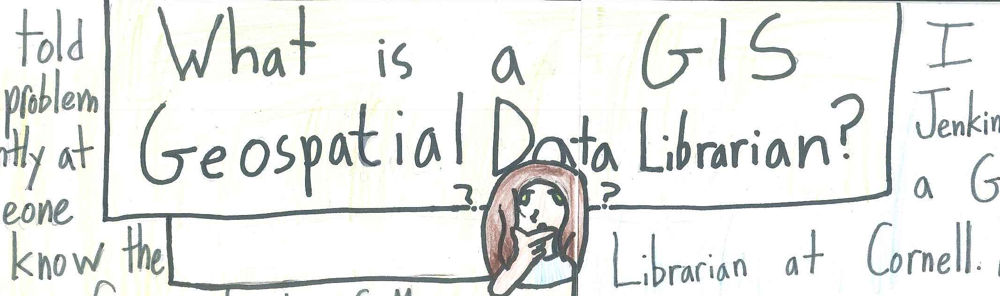
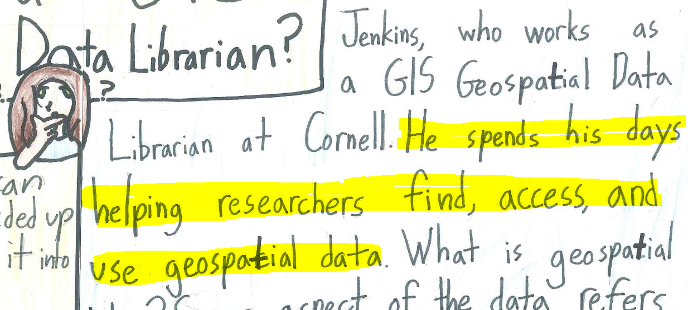

Supporting QGIS at an Academic Library
Keith Jenkins
Keith Jenkins
GIS Librarian
Cornell University
What does a GIS Librarian do?


"researchers"
undergrads, grad students, faculty, staff, community
"find data"
google
"access and use data"
QGIS
QGIS user since 2011
GIS Day 2011

GIS Day 2011

GIS Day 2011

Spring 2014
Offered 1st QGIS workshop at Cornell
- Exploring data
- Editing data
- Analyzing data
- Mapping data
Exploring Data
QGIS starts up fast
Drag-and-drop files
Browser - drives and favorites
Basemaps are fast
Value tool
QGIS ♥ tables
and treats them with the respect they deserve
disable "detect field types"
Refactor fields
respects Excel data types
table joins - you don't have to join every field!
Editing Data
update selected features

Selection tools
Graphical selection tools
Powerful expression editor

VERY! powerful expression editor

Simple (yet powerful!) select-by-form

Analyzing Data
temporary outputs
output to gpkg
encouraging you to do the good thing
Mapping Data
Typical layer transparency
Feature-by-feature transparency

Blending modes - multiply

Dynamic labels
Comments or questions?
kgj2@cornell.edu
@kgjenkins